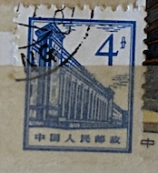
| SOURCE | TITLE| IMAGE MATCH | click to source page |
| Colnect | China, People's Republic : Stamps [Year: 1965] [1/7] : Colnect 📮 | 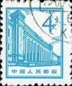 |
| HipStamp | China 1964 SC# 874-884 R13 the Buildings in Beijing Mint SET of 11 Very Fine | Asia - China, General Issue Stamp / HipStamp | 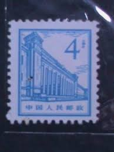 |
| eBay | China PRC Built in Beijing 1964-65 4f fine used A16P31F277 | eBay | 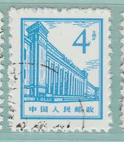 |
| Alamy | CHINA - CIRCA 1965: a stamp printed in the China shows Double Carp Design, circa 1965 Stock Photo - Alamy | 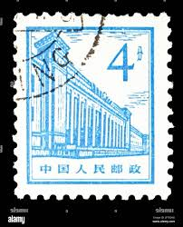 |
| HipStamp | China 1964 SC# 874-884 R13 the Buildings in Beijing CTO Ngai SET of 11 VF | Asia - China, General Issue Stamp / HipStamp | 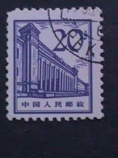 |
| Shutterstock | 15+ Thousand China National Museum Royalty-Free Images, Stock Photos & Pictures | Shutterstock | 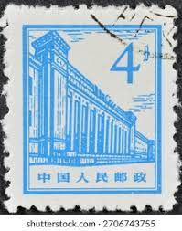 |
| HipStamp | Stamps Are Friends / HipStamp | 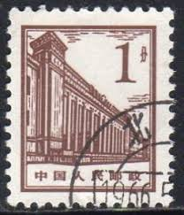 |
| Poppe Stamps | Poppe Stamps: China (Communist), 1964, 2170, People, Buildings - stamps for sale by theme and country | 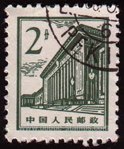 |
| Todocolección | china & maxima, synchronous communication satel - Buy Antique stamps of China on todocoleccion | 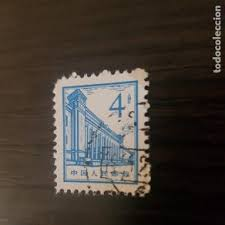 |
| Bob Shop | China - CHINA was listed for 1.00 on 2 Sep at 18:02 by dirk1971 in George (ID:650467305) | 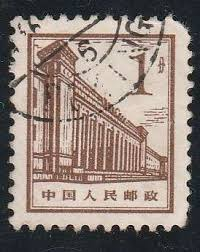 |
| Shutterstock | Chinese Stamp: Over 10,238 Royalty-Free Licensable Stock Photos | Shutterstock | 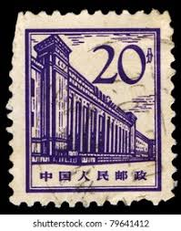 |
| Free stamp catalogue | Stamps from the year 1964 - Freestampcatalogue.com - The free online stampcatalogue with over 500.000 stamps listed. | 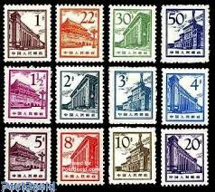 |
| iStock | Chinese Architecture On A Postage Stamp Stock Photo - Download Image Now - Architecture, Building Exterior, Built Structure - iStock | 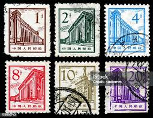 |
| Shutterstock | China Circa 1959 Stamp Printed China Stock Photo 111029774 | Shutterstock | 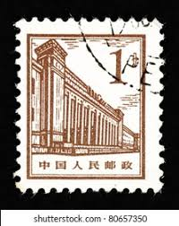 |
| Shutterstock | Definitive Stamps: Over 4,131 Royalty-Free Licensable Stock Photos | Shutterstock | 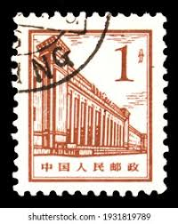 |
| Bob Shop | Looking for china Buy online on Bob Shop. | 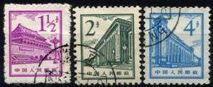 |
| Kenmore Stamp | Great Hall of the People - PRC #880 | 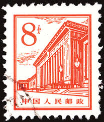 |
| China (03) 1964 Buildings in Beijing | 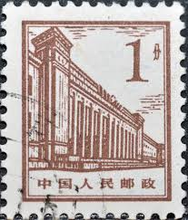 | |
| eBay | China PRC Built in Beijing 1964-65 1f fine used A16P31F273 | eBay | 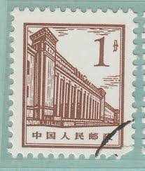 |
| Shutterstock | China Circa 1964 Stamp Printed China Stock Photo 79641352 | Shutterstock | 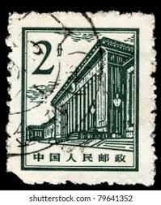 |
| Alamy | MOSCOW, RUSSIA - DECEMBER 7, 2020: Postage stamp printed in China shows People's Hall, Government Building Definitives serie, circa 1965 Stock Photo - Alamy | 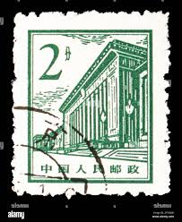 |
| iStock | Tiananmen Of Beijing Stock Photo - Download Image Now - China - East Asia, Postage Stamp, Chinese Culture - iStock | 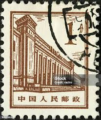 |
| eBay | China PRC Built in Beijing 1964-65 8f fine used A16P31F279 | eBay | 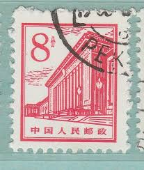 |
| lastdodo.com | Great Hall of the People 8 (1964) - China - People's Republic - LastDodo | 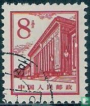 |
| Alamy | CHINA, PEOPLE'S REPUBLIC OF - CIRCA 1965: a stamp printed in China shows Chinese and Japanese girls, circa 1965 Stock Photo - Alamy | 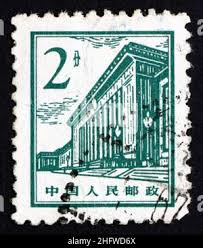 |
| eBay | China - 1964 Beijing Architecture | eBay | 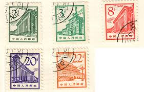 |
| YouTube | YouTube | 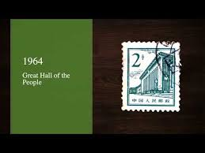 |
| Find Your Stamps Value | Site of Kutien Meeting - 革命圣地: 古田会议会址20f Dark red & buff stamp price, value | 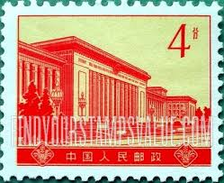 |
| Todocolección | j) 1991 china, war, fdc - Buy Antique stamps of China on todocoleccion | 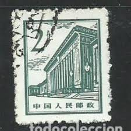 |
| iStock | Number Four Vietnamese To Tom Money Playing Cards 1900 Stock Photo - Download Image Now - iStock | 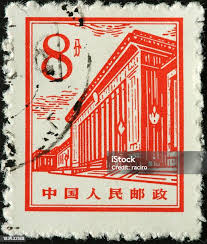 |
| eBay | Old Chinese Stamps for sale | eBay | 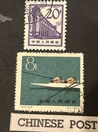 |
| Greysheet | Bank of Taiwan 1 yuan B342as,China P1951as Horizontal purple hollow 様張 ovpt front; horizontal red hollow 様張 ovpt back; all zero s/n Pricing Guide | The Greysheet | 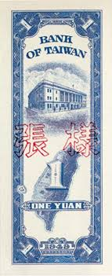 |
| Shutterstock | 7+ Thousand Chinese Postage Stamp Royalty-Free Images, Stock Photos & Pictures | Shutterstock | 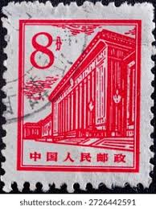 |
| Shutterstock | China Circa 1965 Cancelled Postage Stamp Stock Photo 2706742623 | Shutterstock | 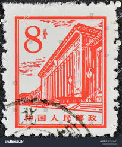 |
| Genbaku Dome (Atomic Bomb Dome) in Hiroshima, Japan, in 1952, a stark reminder of the atomic bombing during World War II. The ruined structure stands amidst the rebuilding city. | 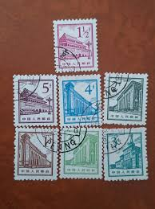 | |
| 1994-21 Scott 2545-48 Ancient Pagodas of China - China Stamps | 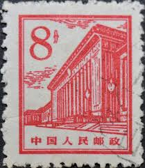 | |
| eBay | PRC. 407. S31-1. 4f. Central Museum of Natural History. CTO. NH.1959 | eBay | 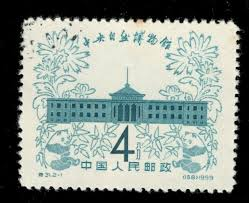 |
| iStock | Traditional Architecture On An Old Korean Postage Stamp Stock Photo - Download Image Now - iStock | 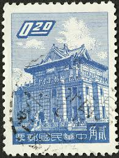 |
| Todocolección | china república popular - 2009 - exp. filatélic - Buy Antique stamps of China on todocoleccion | 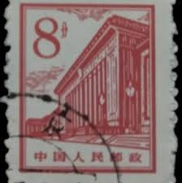 |
| Todocolección | rep. pop. china 1990 - 11º juegos deportivos as - Compra venta en todocoleccion | 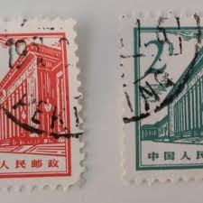 |
| Alamy | Postmarked stamp from Taiwan in the Chu Kwang Tower, Quemoy series Stock Photo - Alamy | 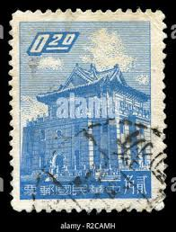 |
| Shutterstock | 2+ Thousand Republic China Stamp Royalty-Free Images, Stock Photos & Pictures | Shutterstock | 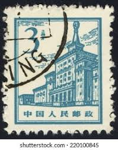 |
| eBay | ROC China - Scott #1220- 20c Ultra "Chu Kwang Tower" Canc/LH 1959 | eBay | 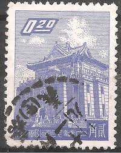 |
| Invaluable.com | Sold at Auction: 1954 Taiwan 1 Cent Banknote P# 1963 Grades Gem CU | 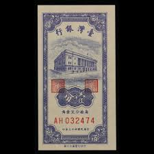 |
| eBay UK | China Taiwan Stamps for sale | eBay UK | 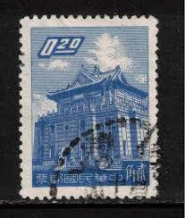 |
| Alamy | China vintage house hi-res stock photography and images - Alamy | 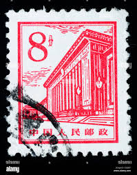 |
| eBay | RoC China - Scott #1220- 20c Ultra "Chu Kwang Tower" Canc/LH 1959 | eBay | 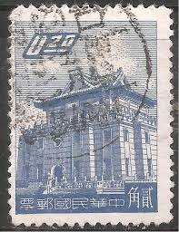 |
| Alamy | Taiwan stamp hi-res stock photography and images - Alamy | 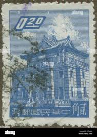 |
| eBay | PMG 1954 Asian Paper Money for sale | eBay | 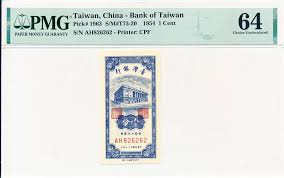 |
| Find Your Stamps Value | 6th National People's Congress: National anthem - 中华人民共和国第六届全国人民代表大会: 中华人民共和国国歌20f Multicolored stamp price, value | |
| PicClick | CHINA PRC SC#1857-8 1983 J94 6th People's Congress MNH $8.00 - PicClick | |
| Shutterstock | 1 Renmin Dahuitang Royalty-Free Images, Stock Photos & Pictures | Shutterstock | |
| eBay | China -20c Blue "Chu Kwang Tower" Used - #3626 | eBay | |
| eBay | China - 1959 Opening of Natural History Museum, Beijing #1 | eBay | |
| eBay | CHINA - 3 USED STAMPS - ARCHITECTURE - 1964. | eBay | |
| Dreamstime.com | 2,866 China Stamp Stock Photos - Free & Royalty-Free Stock Photos from Dreamstime | |
| eBay | ROC China - Scott #1220- 20c Ultra "Chu Kwang Tower" Canc/LH 1959 | eBay | |
| eBay | China - 1964 Beijing Architecture #2 | eBay | |
| Dreamstime.com | Building, Chu Kwang Tower, Quemoy Serie, Circa 1963 Editorial Stock Image - Image of philately, circa: 145673799 |